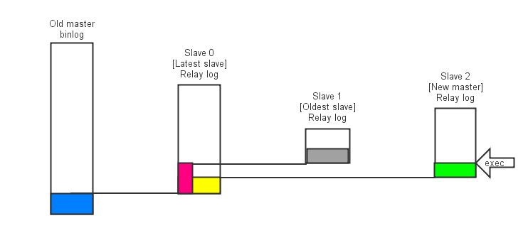
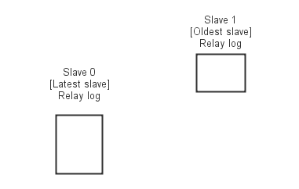

MHA failover时做了些啥
Mon, Oct 14, 2013读了MHA failover部分的源码整理一下
代码位置注解的格式为file_name@function_name
设定场景
假设集群里有四个mysql实例分别是old_master和slave 0,1,2 slave 0,1,2 执行failover中的角色分别为 Latest slave, Oldest slave 和 New master
如图 
Failover的步骤代码
(MasterFailover@do_master_failover)
1 check_settings
2 force_shutdown
3.1 check_set_latest_slaves
3.2 save_master_binlog
3.3 Determining New Master Phase
3.3.1 find_latest_base_slave
3.3.2 select_new_master
3.3.3 recover_master
3.3.4 $new_master->{activated} = 1;
4 Slaves Recovery Phase
4.1 Starting Parallel Slave Diff Log Generation Phase.
4.2 Starting Parallel Slave Log Apply Phase.
5 cleanup
Failover的一些步骤说明
2 force_shutdown
2.1 对所有slave, stop io thread.(MasterFailover@force_shutdown) 这里仅stop io thread, 而不是stop slave, 尽可能让sql thread运行。sql thread是在recover必要时（要生成差异数据时）才停下。
2.2 在Old master上回收动态ip, shutdown（并可选用power manager对Old master进行关机）. (MasterFailover@force_shutdown_internal)
3.1 check_set_latest_slaves, 确定latest_slave和oldest_slaves. latest_slave指的是slave中relay log最超前的slave, 相反oldest_slave指的是relay log最落后的slave
3.2 save_master_binlog, 保存Latest slave到Old master的binlog差异数据, 如图中蓝色部分. 由于master可能是硬件故障等, 不一定能响应save_master_binlog, 所以蓝色部分不一定能保存下来. 若失败, 之后的步骤中用到蓝色部分的地方都可以忽略, 最终结果也是会有部分数据的丢失
3.3.1 find_latest_base_slave, 这里最理想的状况是能从所有的latest slave中能找到一个relay log可以用于补齐oldest slave的 （如果oldest slave可以被补齐, 那其他的slave都可以被补齐）. 如场景图中所示，Slave 0可以作为latest_base_slave.
另一种情况是不能用于补齐oldest slave, 比如下图的状况, 集群里最全最新的relay log也无法和oldest slave对接上. 这种情况的处理跟ignore_fail配置有关, 若所有努力都失败只好failover失败
关于ignore_fail的处理逻辑，可参看源码或者文后我附的源码笔记 
3.3.2 select_new_master, 选举new master.
选举的策略是尽量在candidate slave列表中，尽量在latest slave列表中，不可以在bad列表中. 注意，new master可以不是latest slave, 场景图中列举的是这种情况（尽管应该比较少见）
3.3.3 recover_master. 将差异数据补齐到new master, 让new master成为集群里数据最全最新的节点.
生成old_master上exec relay_log到read relay_log的差异数据（原因是sql thread落后于io thread）, 源码中中称为diff_from_exec_to_read, 如图中绿色部分.
生成old_master到latest_base_slave的差异数据(MasterFailover@recover_relay_logs), 如图中黄色部分.
重放: 在old_master上重放绿色部分, 然后重放黄色部分(MasterFailover@send_binlog & MasterFailover@recover_slave), 最后重放蓝色部分（MasterFailover@apply_diff）
4 对所有的slave, 这里是以old_slave为例, 与recover_master类似：生成diff_from_exec_to_read（黑色部分）, 生成与latest_base_slave的差异数据（红色部分）. 然后重放黑色部分，红色部分和蓝色部分. (MasterFailover@recover_slaves)
最后让所有slave连到新的master上
一点说明
- 只是简单记录了failover的基本操作, 仅在2.1里说明了stop io thread. 代码中其他操作如change master的操作可以直接翻代码翻到, 不穷举
- 我阅读代码的原始笔记放在evernote公开页面, 里面有一些细节, 不再整理